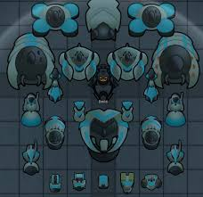
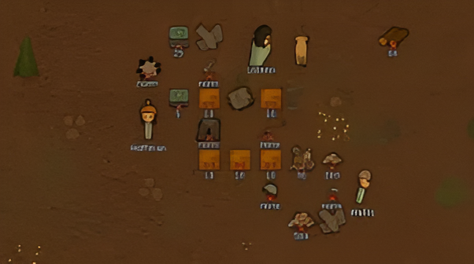
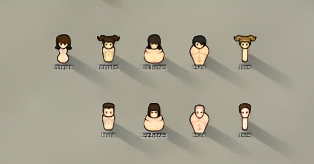
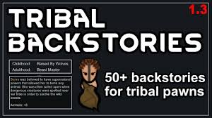

Rimworld: Characters
The Mechanitor
The Mechanitor is medium difficulty as you start with one pawn but have robots
The Mechanitor start thrusts players into the role of a lone tech genius who has mastered the art of controlling mechanoids. This character begins with a single, powerful mechanical companion, ready to assist in combat, crafting, or labor. While skilled and resourceful, Mechanitors rely on their mechanical allies to survive in a hostile world, constantly scavenging parts and power sources to keep their mechanoids in working order. Whether they build an army or a small team of specialized machines, Mechanitors bring a unique, futuristic flair to the RimWorld experience.
The Crashlanded
The most begginer friendly start
The iconic RimWorld experience, Crashlanded survivors start with a handful of companions (3 pawns) who just fell from the sky after a brutal spaceship disaster. Stranded on an unknown planet, they salvage what they can from the wreckage to establish a foothold in the wilderness. With limited supplies but decent technology, they balance survival and rebuilding, fending off environmental threats, raiders, and the challenges of coexisting in tight quarters. This start gives players a well-rounded mix of skills, gear, and opportunities to build a thriving colony—or simply struggle to stay alive.
The Vagrant
Naked Brutality is one of the hardest starts in the game
For those seeking the ultimate challenge, Naked Brutality or the Vagrant begins with one lone survivor, completely unarmed, unarmored, and yes, entirely naked. With nothing but their wits and whatever they can scavenge or craft, players must overcome extreme odds to survive. Facing a lack of resources, extreme vulnerability, and the harsh environment, players must carefully manage the character’s health, morale, and nutrition. This start is a true test of patience, skill, and determination, perfect for players who thrive on adversity and enjoy the thrill of starting from nothing. You have to choose the right skills or else it would be the end for you. for example, a lone pawn with no growing skills would starve to death or you don't have any medical skills and die to an illness or a stab wound.
The Tribals
The Tribal start is the second hardest start as you no technology & research with slow research progression but have 5 pawns
Tribal starts transport players into a primitive setting with a group of five tribals, bound by tradition and knowledge passed down over generations. These colonists are low-tech, beginning with basic tools and weapons, and they lack advanced knowledge of electronics or metalwork. However, they have a strong connection to nature, rich in herbal medicine skills, and start with a resilient, team-focused mindset. Players must carefully guide their tribes toward technological progression, balancing tradition with new discoveries as they strive to carve out a permanent place in the unforgiving landscape of RimWorld. The tribals only start out with primitive tech and their research speed is one of the lowest in the game.